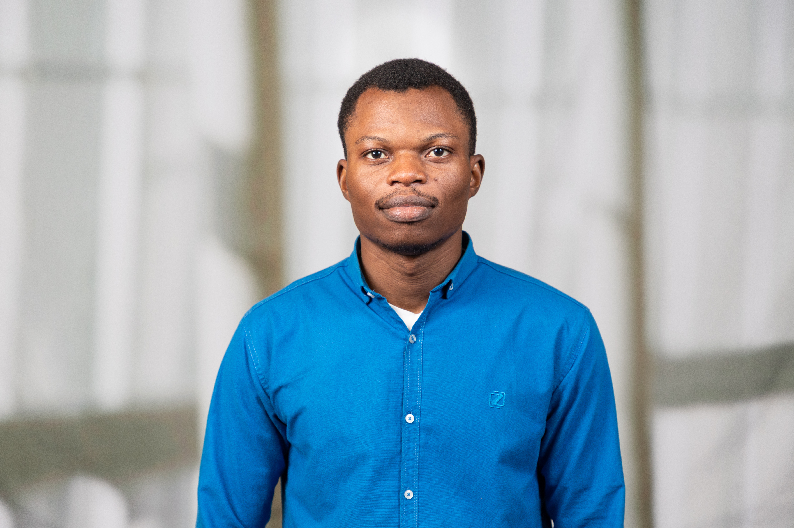

01
Cancer biology & spatial omics
I study tumor heterogeneity and the tumor microenvironment using spatial and single-cell data, with a broader interest in cancer treatment resistance.
Bioinformatics & computational cancer biology
PhD Student, Bioinformatics and Systems Biology
University of Nebraska Medical Center · Omaha, Nebraska
I study cancer treatment resistance using spatial transcriptomics, single-cell data, and digital pathology. My research focuses on computational methods for characterizing drug-response heterogeneity and its association with the tumor microenvironment.
I develop machine-learning approaches that connect pharmacogenomic data with molecular and histologic measurements of tumors. My broader work includes computational drug discovery and cancer genomics.

Computational cancer biology, with an emphasis on treatment resistance, tumor heterogeneity, and molecular data analysis.
I study tumor heterogeneity and the tumor microenvironment using spatial and single-cell data, with a broader interest in cancer treatment resistance.
I am interested in computational approaches for interpreting cancer-related molecular and histologic data.
My interests include molecular modeling, cancer genomics, and computational analysis of candidate compounds and therapeutic targets.
Journal articles, preprints, and conference contributions. My name is highlighted in the author lists.
Journal of Translational Medicine
In Silico Pharmacology
Advances in Biomarker Sciences and Technology
Cancer Epidemiology, Biomarkers & Prevention, 33 (9 Supplement), B010.
arXiv:2311.11065
Code accompanying my published computational work.
Code associated with my research on personalized neoantigen mRNA vaccines for breast cancer, connecting sequencing data with computational neoantigen analysis.
Contributions to scholarly evaluation, student development, and science outreach.
SAGE · 2025
Editorial assessment and coordination of manuscript peer review.
Scientific Reports; BMC Genomics; Frontiers in Oncology; Frontiers in Bioinformatics; Evolutionary Bioinformatics; Bioinformatics and Biology Insights.
In Silico Pharmacology; Molecular Diversity; Naunyn-Schmiedeberg’s Archives of Pharmacology; Drug Design, Development and Therapy.
Reviewed 21 abstracts for the 3DSIG track in structural bioinformatics and computational biophysics.
AMIA 2026 Amplify Informatics Conference (reviewed in 2025); ABRCMS 2025; LXAI at NeurIPS 2025; AAAS Annual Meeting proposal review (2025).
Society for Science · 2025
iGEM Foundation, Grand Jamboree · 2025
Bioinformatics Club, UNMC · 2026–present
Graduate Student Association, UNMC · 2026–present
International Student Association, UNMC · 2026–present
Nebraska Science Olympiad · 2025–present
American Cancer Society on Campus, UNMC · 2025–present
African Student Association, UNMC · 2025–2026
Recent presentations, fellowships, and research updates.
Awarded travel support to attend the UChicago & Caltech AI + Science Conference 2026, where my research has been accepted for a poster presentation.
Awarded a UNMC Graduate Fellowship.
Selected for the Deep Learning for Science Summer School, hosted by Computing Sciences at Berkeley Lab.
Selected for the NIH-funded Multi-Omics Network Analysis Workshop (MONET) at the University of Colorado Anschutz Medical Campus.
Published research on personalized mRNA vaccine design in In Silico Pharmacology.
Our study of kaempferols from Echinacea purpurea targeting AXL in breast cancer was accepted in Discover Oncology.
Joined UNMC as a PhD student in Bioinformatics and Systems Biology.
Presented computational research on medicinal-plant bioactive constituents and mutant ovarian TP53 at ISMB 2022.
University of Nebraska Medical Center
In progress
COMSATS University Islamabad
Adekunle Ajasin University
For research correspondence and collaborations in computational cancer biology, spatial omics, and machine learning:
Request my CVOmaha, Nebraska, United States